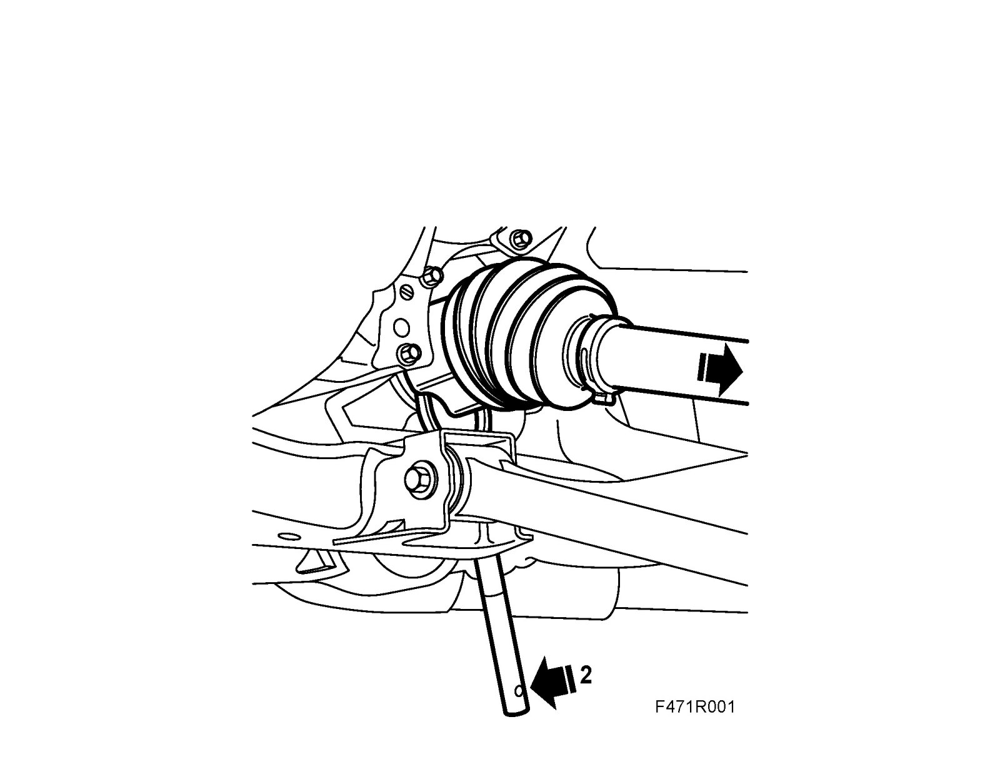
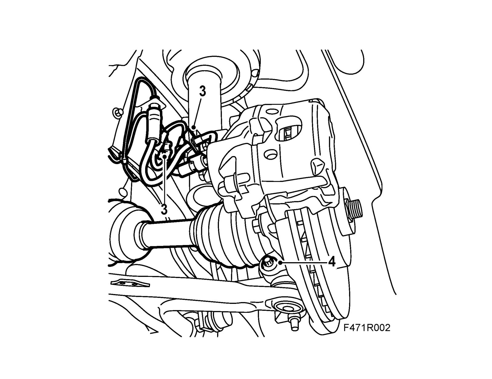
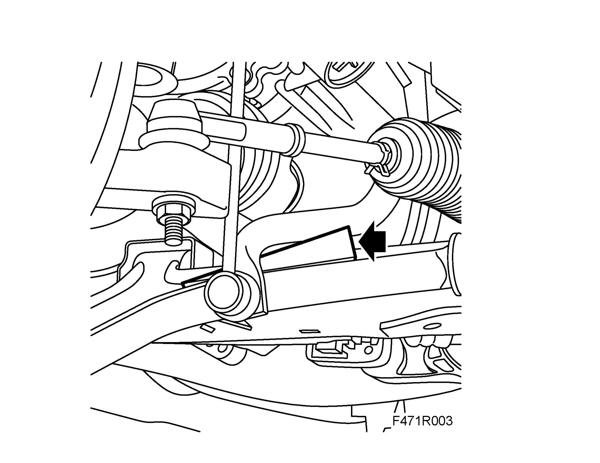
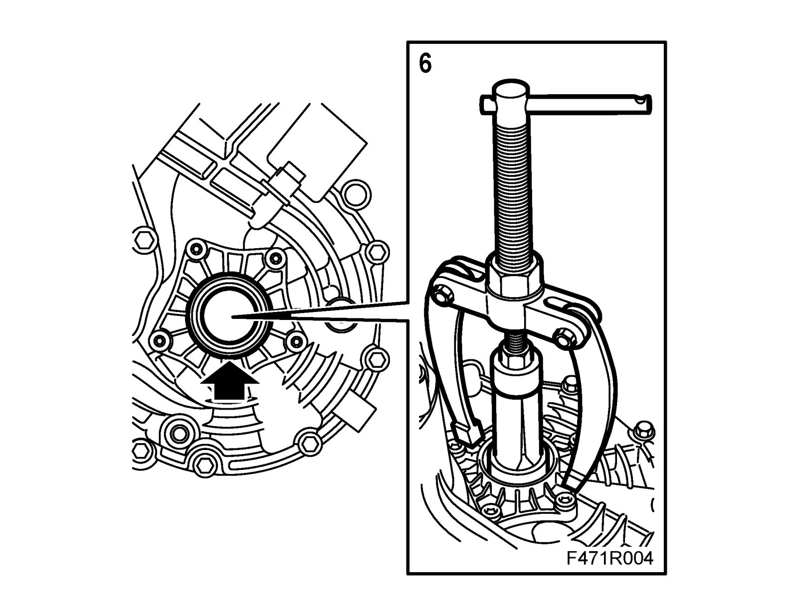
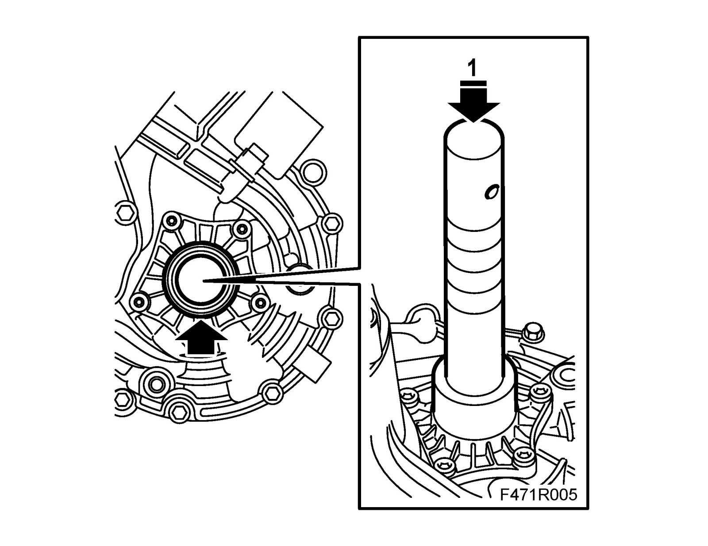
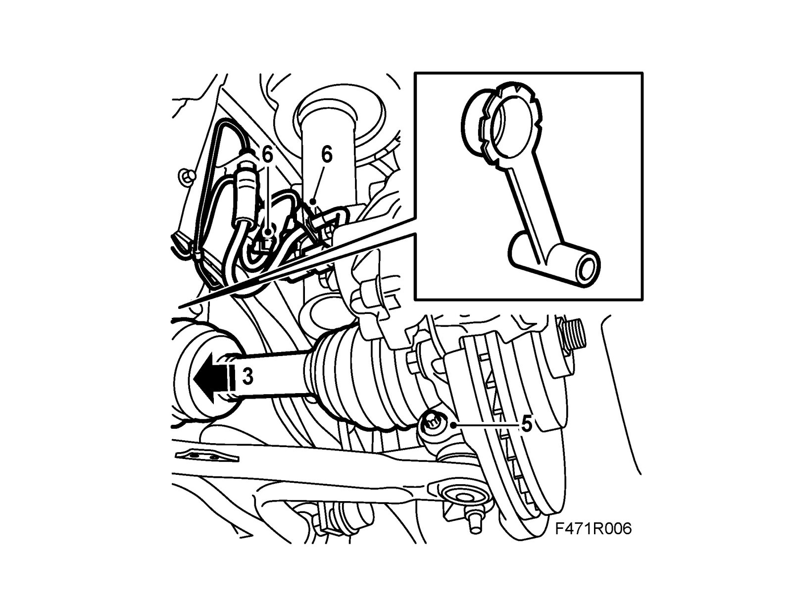

Drive Shaft Seal, Left-Hand
Drive shaft seal, left-handRemoving in-car
1. Raise the car and remove the wheel.
Z19: Remove the lower engine cover.
2. Detach the drive shaft from the gearbox, use 87 92 616 Removal tool, drive shafts.

3. Undo the clips on the brake hose and the ABS cable fasteners.

4. Remove the bolt holding the ball joint to the steering swivel member. Pry loose and lower the swivel arm. Fix it in this position with a 83 95 238 Wedge placed between the swivel arm and the anti-roll bar.

5. Turn the wheel to the right to facilitate removal of the drive shaft. Grip the spring strut and pull so that the drive shaft comes with it. Then lower it in front of the swivel arm. Place a receptacle under the gearbox to avoid oil spill on the floor.
Important
Exercise caution; make sure that the tripod does not come loose from the inboard universal joint driver (aut).
6. Remove the seal with 87 92 350 Puller, drive shaft seal and 87 91 683 Puller.

Fitting in-car
1. Tap on the new seal with 87 92 657 Fitting drift, drive shaft seals. Lubricate the seal with gearbox oil.

2. Fit 83 95 162 Protective collar, drive shafts into the sealing ring.
3. Make sure that the drive shaft is clean and then align it with the tool.
Important
Fit the drive shaft in the gearbox until about 20 mm remains and extract the tool before the shaft's sealing surface reaches the shaft seal.

4. Push in the rest of the shaft until the circlip clicks in.
5. Fit the ball joint to the steering swivel member and tighten.
Tightening torque 50 Nm (37 lbf ft)
Warning
Make sure the steering swivel pin is visible above the steering swivel member before fitting the bolt.
6. Fit the brake hose in the mounting on the steering swivel member and fit the clip as well as the two mountings for the ABS lead.
7. Fit the wheel
8. Fill the gearbox with oil to the correct level. See Refilling/changing the gearbox oil. Service and Repair
Z19: Fit the lower engine cover.